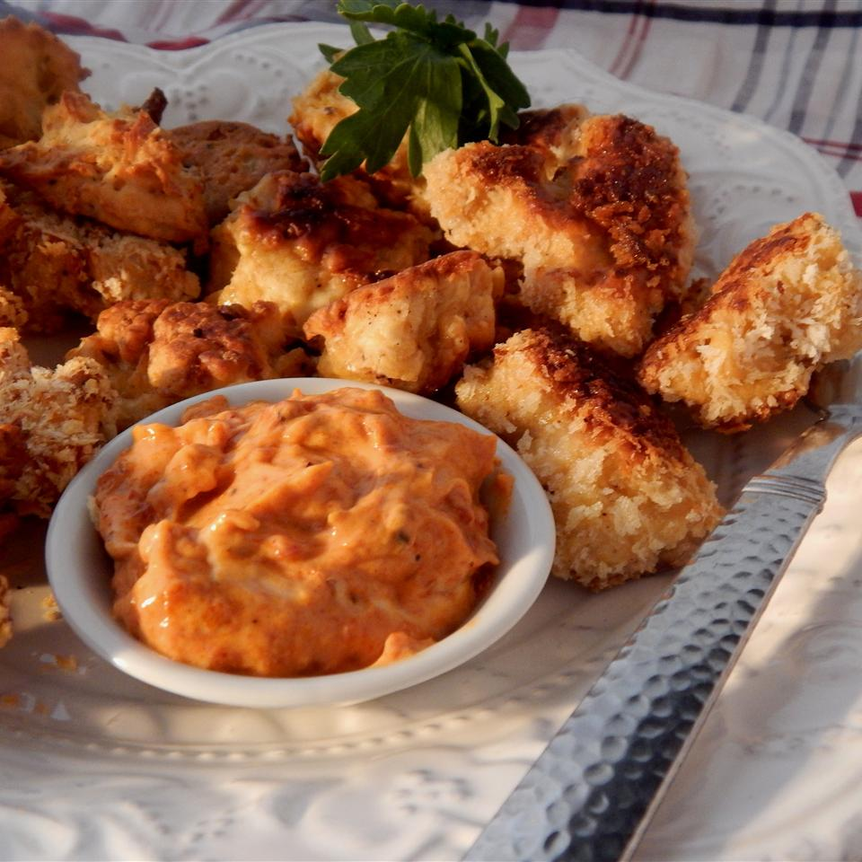

Nuggets

Description
Per Serving: 225 calories; protein 23.7g; carbohydrates 12.5g; fat 8.3g; cholesterol 99.7mg; sodium 250.1mg. Full Nutrition
Review: I tried this as written, did some baked and some with the outside dipped in panko. The panko added a much needed crunch to these.. The ones without the panko, even fried ones never got crunchy. Make sure you add lots of salt and pepper
Ingredients
- 1½ teaspoons baking powder
- 2 cups shredded cooked turkey
- ½ cup all-purpose flour
- 1 egg
- 1 tablespoon vegetable oil, or as needed
Steps
- Stir water and baking powder together in a bowl (mixture should foam). Mix turkey, flour, egg, salt, and black pepper into water mixture. Form mixture into bite-sized nuggets.
- Heat vegetable oil in a skillet over medium heat.
- Fry nuggets in hot vegetable oil until golden brown, 5 to 8 minutes per side.